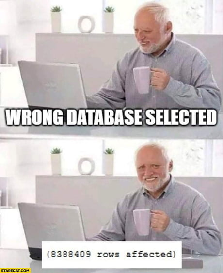
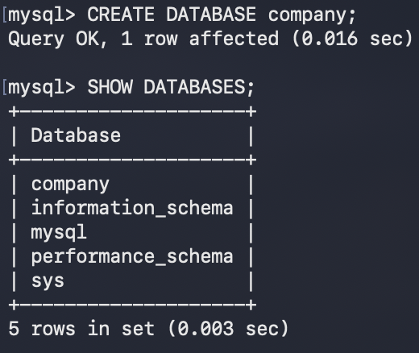
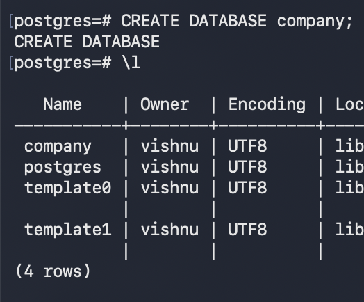

In both MySQL and PostgreSQL, a database can be created directly using the following command:
MySQL / PostgreSQL
CREATE DATABASE company;
Note: PostgreSQL also allows a superuser to create a database directly without specifying an owner, in which case the superuser will be the default owner of the database, using the above command.
However, in larger systems, it is common to create a dedicated user who will own and manage the database instead, using the following commands:
PostgreSQL
CREATE USER rambo
WITH PASSWORD 'jumbo';
PostgreSQL
CREATE DATABASE company
WITH OWNER rambo;
Prompt
Postgre command for creating a new database named 'company'
and assign ownership to user 'rambo'.
The database owner is responsible for managing objects inside the database and can grant access to other users when required (DCL), will be covered in detail later.
Note: Creating a dedicated owner is not mandatory. PostgreSQL databases can be created directly by a superuser. However, assigning ownership to a specific user is considered a good administrative practice, especially in production environments.
Knowing which database to choose is essential, otherwise.

MySQL
SHOW DATABASES;
PostgreSQL
\l
|
 |
 |
Note: PostgreSQL prints DDL and DML log messages in the terminal, unlike MySQL.
Important: PostgreSQL shorthand commands such as \l,
\dt,
\c, and others are available only within the PostgreSQL terminal
client (psql). They are not part of standard SQL and therefore
cannot be used in graphical tools such as DBeaver, pgAdmin, or other database clients.
There can be many databases, choosing the database to work with is essential to begin with.
We need to specify which database we are working with.
MySQL
USE company;
PostgreSQL
\c company
Note: PostgreSQL has no USE statement.
Now, that we have created and selected the database, we can start creating tables and inserting data into it. Before that, let's go through the datatypes in SQL first.
Next: SQL datatypes >>
Previous: Introduction <<